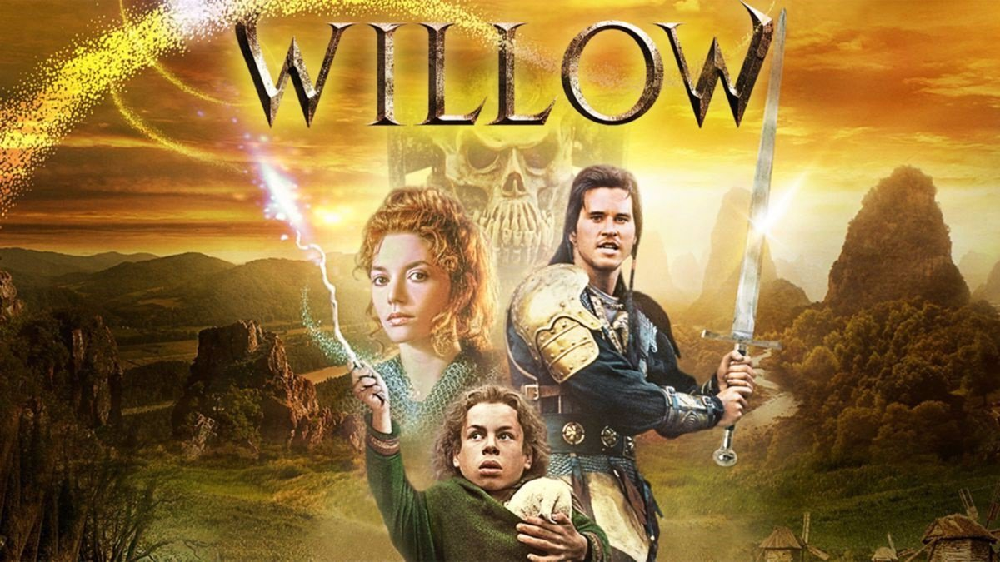

The Peripheral
Fecha: 21 de octubre de 2022
Director: Scott B. Smith
Clasificación: Ciencia Ficción, Suspenso
Plataforma: Amazon Prime Video
1899
Fecha: 17 de noviembre de 2022
Director: Jantje Friese, Baran bo Odar
Clasificación: Drama, Terror, Suspenso
Plataforma: Netflix

Willow
Fecha: 30 de noviembre de 2022
Director: Jonathan Kasdan, Wendy Mericle
Clasificación: Aventura, Fantasía
Plataforma: Disney+